About this Lesson:
In the last lesson you prepared a cut out character to be rigged by adding Master pegs. In this lesson you will learn how Deformations let you animate bitmap or vector-based graphics. Deformations act as a skeleton with limbs and articulations you can bend, reshape, and curve. You can deform a character made out of one, or many, drawing or image layers and make it move as if it were a cut-out puppet. This also allows you to take an area in a single bitmap image and create animation by distortion. A deformation skeleton is composed of deformation nodes, which are the various pieces required to articulate or deform your drawings.Lesson Duration: 8 hours
Harmony Topics:
Please note: There is a presentation on Deformers on the bottom of this lesson
- Types of Deformers: The 4 types (each type has its own advantages and limitations and need to be rigged and handled in different ways) of deformers are:
- Bone
- Game Bone
- Curve
- Envelope
- Deformation Toolbar: The Deformation toolbar contains the various tools and options used to create a deformation rig. This toolbar is displayed in the default interface.
- Rigging Tool: In Harmony, a character rig is basically a template based on your character's model, but in which all movable parts are broken down into different layers, and arranged in a hierarchy that facilitates digital animation, also known as cut-out animation. To make a character rig, we must first make sure you have a character model to build on. If you have any drawing of a character available, import it into a new scene, then scale and position it to your liking. Otherwise, you can draw your character's model directly in Harmony. Once you have a model ready, we can start breaking it down into parts to build your rig with.
- Inverse Kinematics: The Inverse Kinematics (IK) tool allows you to pull on a character's extremities, such as the hands and feet, and have the rest of the body follow. It can be used on any piece connected in a hierarchy. However, you don't have to use IK every time you have a hierarchy rig. This tool is useful when you want to bend a character's knees, make it sit and move the rest of the body, and so on. It will also assist you with posing difficult moves.
- Inverse Kinematics Tool (IK): This tool helps you achieve complex motions, such as sitting down or knee bending. The Inverse Kinematics tool moves and rotates every selected element as a chain. Inverse kinematics means that the element is animated from the child up to the parent. In other words, if the hand is animated, then the forearm, arm and shoulder follow the hand in a fairly natural way in terms of the movement, rotation and bending.
- Kinematic Output: The Kinematic Output node lets you hook a separate element that you want to be linked to the deformation chain but not be part of the deformation, such as a hand to an arm or an arm to the body. These elements will follow the movement of the chain just like a regular cut-out character hierarchy piece without being influenced by the deformation of the arm. If you don't use the Kinematic Output, the piece's pivot will not follow the deformation. Connect a Kinematic Output node below the deformation node you want your drawing to follow.
- Nudging: In the same way you create multiplane backgrounds (depth), you can perform a micro nudge of the part to be reordered and see it in front of the other elements, even if its layer is actually behind the other ones in the Timeline view. The forward-backward position can also be animated over time.
Task:
-
Download the support files from the Lesson Files.
-
Watch, complete and take notes on the Deformers video tutorial and the topics presented in this lesson. There is an interactive presentation on Deformers on the bottom of this lesson. Taking notes in your sketchbook/notebook on how to use Harmony and any animation terminology will help you prepare for your certification exam at the end of this course.
-
Be sure to save your Harmony file as: YourName_Deformers in your Documents folder.
Hint: Space bar is freehand, 1 is Zoom out and 2 is Zoom in. These shortcuts will help you navigate the Node view.
Part 1 - Using the Bone Tool:
-
Launch Toon Boom Harmony.
- In the Welcome Window, open 13_using_deformers
- Take some time to investigate the construction of the Timeline layers and the Node View. You may also want to review your notes from the previous lesson.
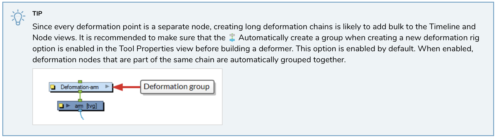
- Go to the Body Backdrop in Node view and select the Body Drawing layer node.
- Now go to the Timeline View, press o on the keyboard and it will highlight the Body Drawing layer.
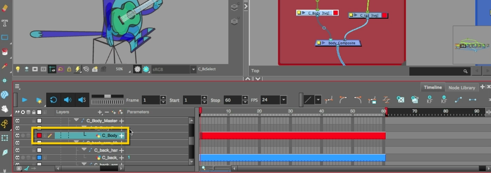
- Use Solo mode on the Body layer in the Timeline.
- Go to the Deformation Toolbar, next to the Advanced Animation toolbar.
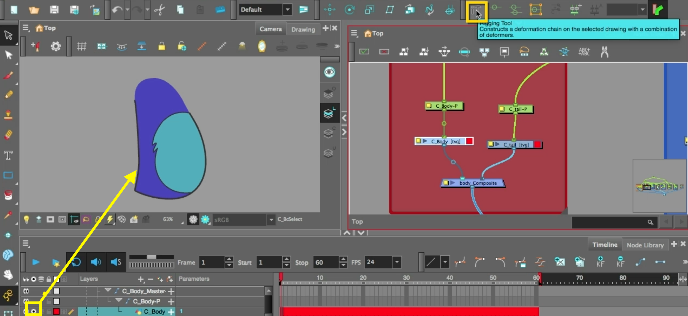
- Select the Rigging Tool.
- In the Tool Property select the Bone Mode.
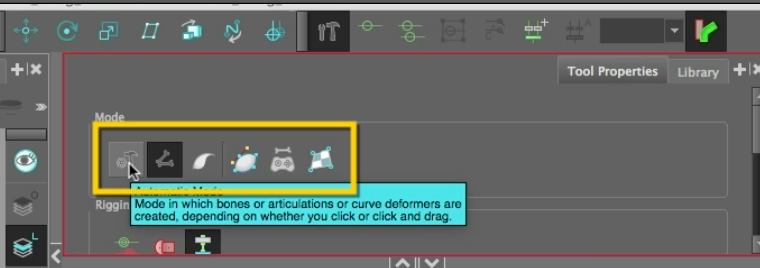
- Use the Bone mode deformer to add a skeleton to the body in Camera view. Be sure to add the bone tool selection points to where the spine of Cnote would be.
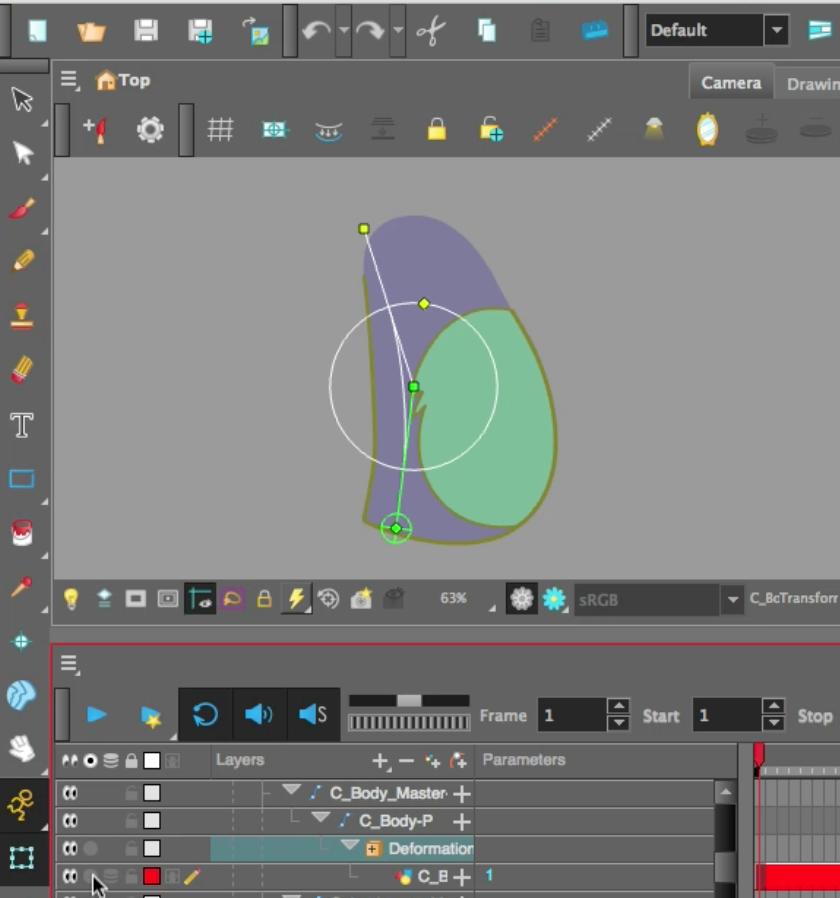
- Start by clicking the bottom of the Body art, next the center, and last the top. Enlarge the articulation feature in the middle of your skeleton so it is approximately the size of CNotes' waist.
- Test the Bone rig using the Transform tool in the Toolbar.
- Disable Solo mode.
- You will be using the same Bone deformer to control CNotes' entire body.
- In Node view, find the Deformer Node which was added in the Body backdrop.
- Select the Deformer Node, hold the Option (macOS) or Alt (windows) key and drag it above the backdrops. Release the mouse and keyboard key.
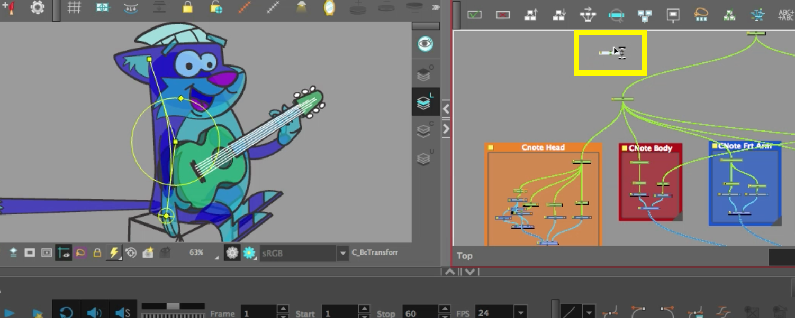
- Using the hold the Option (macOS) or Alt (windows) key and drag it into the waypoint between Upper Body MasterPeg and the CNNote MasterPeg.
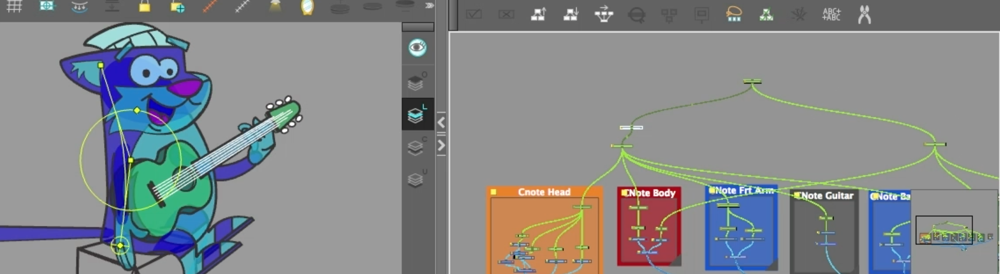
- Now everything under this node will be influenced by this deformer.
- You will need to add a Kinematic Output (Bone) node from the Node Library, which will prevent certain art not to be deformed.
- Reposition the Kinematic Output (Bone) node. Hold Option (macOS) key or Alt (windows) and drag to the waypoint between the Head Backdrop and the Upper Body MasterPeg.
- Rename the Kinematic Output (Bone) as KO.
- Copy and paste the KO node.
- Reposition the new KO node. Hold Option (macOS) key or Alt (windows) and drag to the waypoint between the Front Arm Backdrop and the Upper Body MasterPeg.
- Paste the KO node again
- Reposition the new KO node. Hold Option (macOS) key or Alt (windows) and drag to the waypoint between the Back Arm Backdrop and the Upper Body MasterPeg.
- Paste the KO node again
- Reposition the new KO node. Hold Option (macOS) key or Alt (windows) and drag to the waypoint between the Guitar Backdrop and the Upper Body MasterPeg.
Hint: These KO nodes will prevent the art from being distorted. But the art pieces do move with the Bone Node you created.
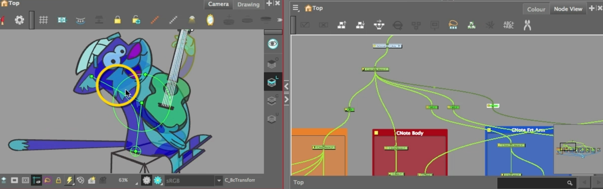
- Collapse the folder structure in the Timeline.
- Go to the Deformer Toolbar and press Reset Current Key Frame. This removes any key frames which may have been applied to your Timeline.
Part 3 - Add Bone Deformers to Legs:
- Go to the Deformer Toolbar and press Show Selected Deformers and Hide all Others.
- Go to Front Leg Backdrops.
- Use Solo Mode on the Foot and Leg layers (this will hide all other art).
- Use the Bone mode deformer to add a skeleton to the Leg in Camera view. Be sure to add the bone tool selection points to where the leg bends. Modify the articulation point at the knee so it is touching the edges of the line art.
- Select the Deformer Node, hold the Option (macOS) or Alt (windows) key and drag it above the backdrop. Release the mouse and keyboard key.
- Using the hold the Option (macOS) or Alt (windows) key drag it into the waypoint between Front-Leg MasterPeg and the Upper body MasterPeg.
- Paste the KO node again (from clipboard.
- Reposition the new KO node. Hold Option (macOS) key or Alt (windows) and drag to the waypoint between the Front Leg MasterPeg and the Front Front Peg. This will prevent the toes from being distorted.
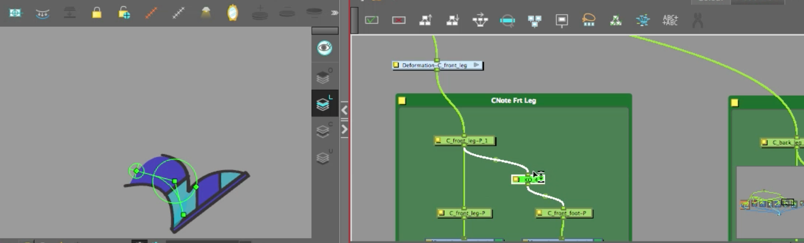
- Disable the Solo modes on those layers.
- Repeat Part 3 to rig the back leg.
- Test out the animation of the body parts by using the Transform tool.
- Go to the Deformer Toolbar and press Reset Current Key Frame. This removes any key frames which may have been applied to your Timeline.
Part 4 - Using the Curve Deformer:
- In the Tool Property select the Curve Mode.
- Go to the Deformer Toolbar and press Show Selected Deformers and Hide all Others.
- Go to the Tail Backdrop in Node view and select the Tail Drawing layer node.
- Now go to the Timeline View, press o on the keyboard and it will highlight the Tail Drawing layer.
- Apply the Curve deformer points by clicking first where you want the rotation point to begin. Click a point and drag the cursor approximately a third of the way. Continue to add the last point at the end of the tail by clicking and dragging.
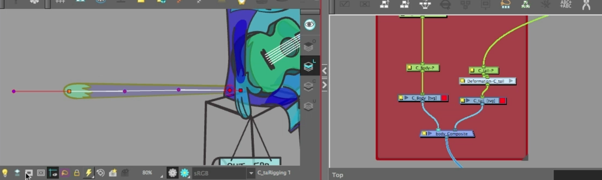
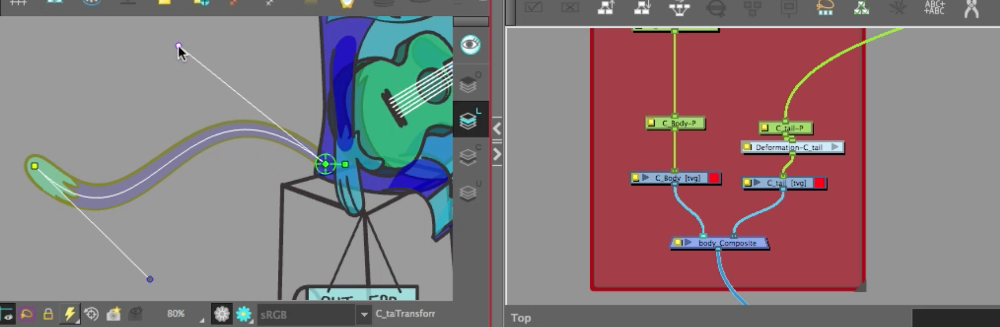
- Test out the animation of the tail by using the Transform tool.
- Go to the Deformer Toolbar and press Reset Current Key Frame. This removes any key frames which may have been applied to your Timeline.
Hint: When designing art to be manipulated by the Curve deformer, you should always design the art straight, not curves. The Curve deformer will make the magic happen.
Part 5 - Add Envelope Deformers to Arms:
- Go to the Deformer Toolbar and press Show Selected Deformers and Hide all Others.
- Go to Front Arm Backdrops.
- Use Solo Mode on the arm and hands layers (this will hide all other art).
- Use the Envelope mode deformer to add a skeleton to the Leg in Camera view. Apply the Envelope deformer points by clicking first where you want the rotation point to begin. Click a point at the elbow and drag the Envelope points approximately a third of the way. Continue to add the last point at the wrist by clicking and dragging.
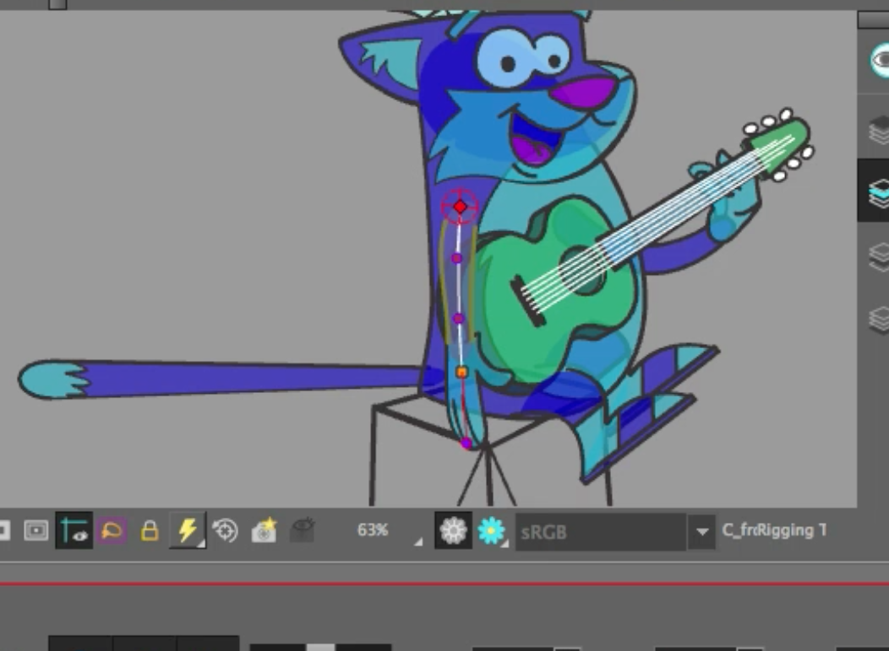
- Select the Deformer Node, hold the Option (macOS) or Alt (windows) key and drag it above the Front Arm backdrop. Release the mouse and keyboard key.
- Using the hold the Option (macOS) or Alt (windows) key drag it into the waypoint between Front-Arm MasterPeg and the Upper Body MasterPeg.
- Paste the KO node again (from clipboard).
- Reposition the new KO node. Hold Option (macOS) key or Alt (windows) and drag to the waypoint between the Front Arm MasterPeg and the Front Hand Peg. This will prevent the hand from being distorted.
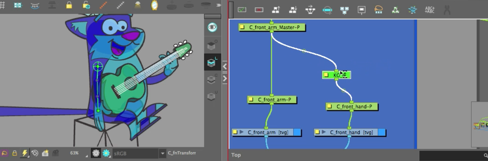
- Repeat this process to rig the back arm, but use the Curve deformer..
- Test out the animation of the body parts by using the Transform tool.
- Go to the Deformer Toolbar and press Reset Current Key Frame. This removes any key frames which may have been applied to your Timeline.
- Time to reposition the back Hand using nudging. This will move it in front of the guitar.
- Disable Solo modes
- Disable Animate mode.
- Select Transform tool.
- Go to Camera View.
- Click the back hand art in the Camera view.
- Hold Option (macOS) or Alt (windows) key press the down arrow once, which will shift the art in Z space.
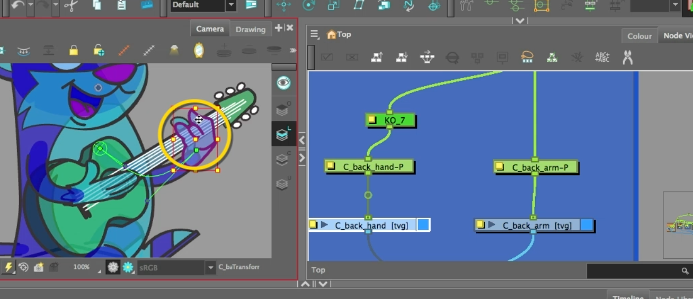
- Click the back hand art in the Camera view.
- Hold Option (macOS) or Alt (windows) key press the down arrow once, which will shift the art in Z space.
- Test out the animation of the tail by using the Transform tool.
- Go to the Deformer Toolbar and press Reset Current Key Frame. This removes any key frames which may have been applied to your Timeline.
- Save your project as first as YourName_Deformers.